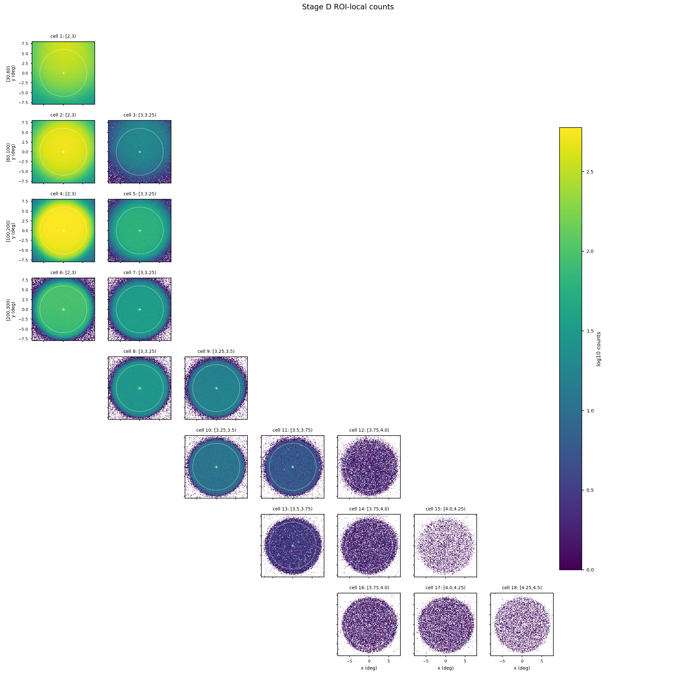
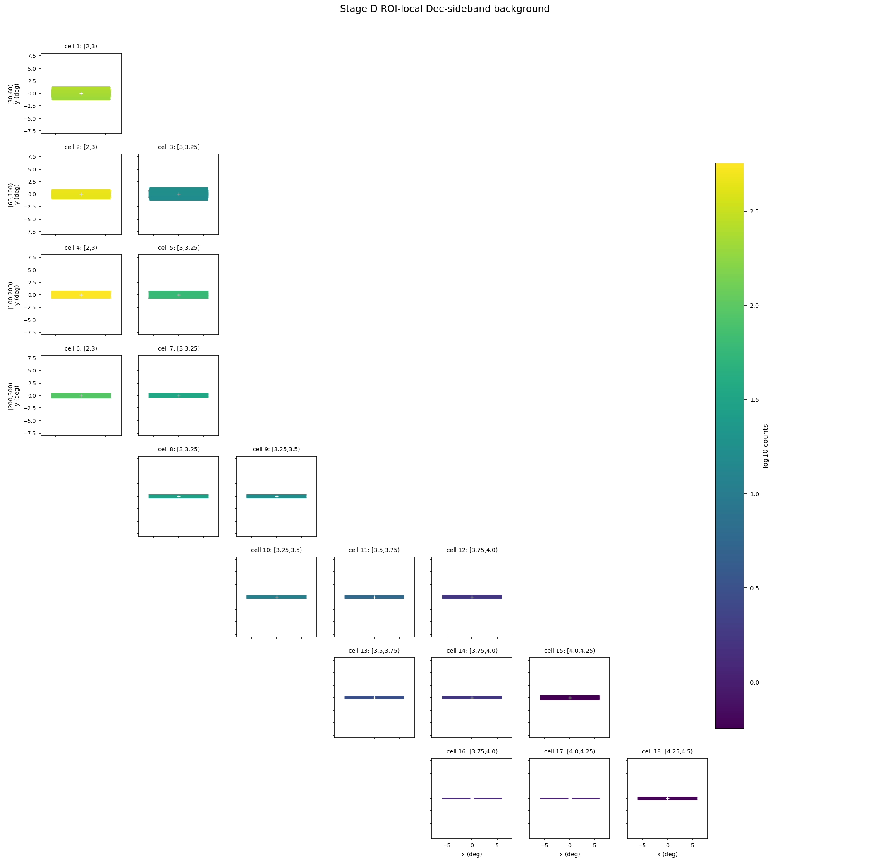
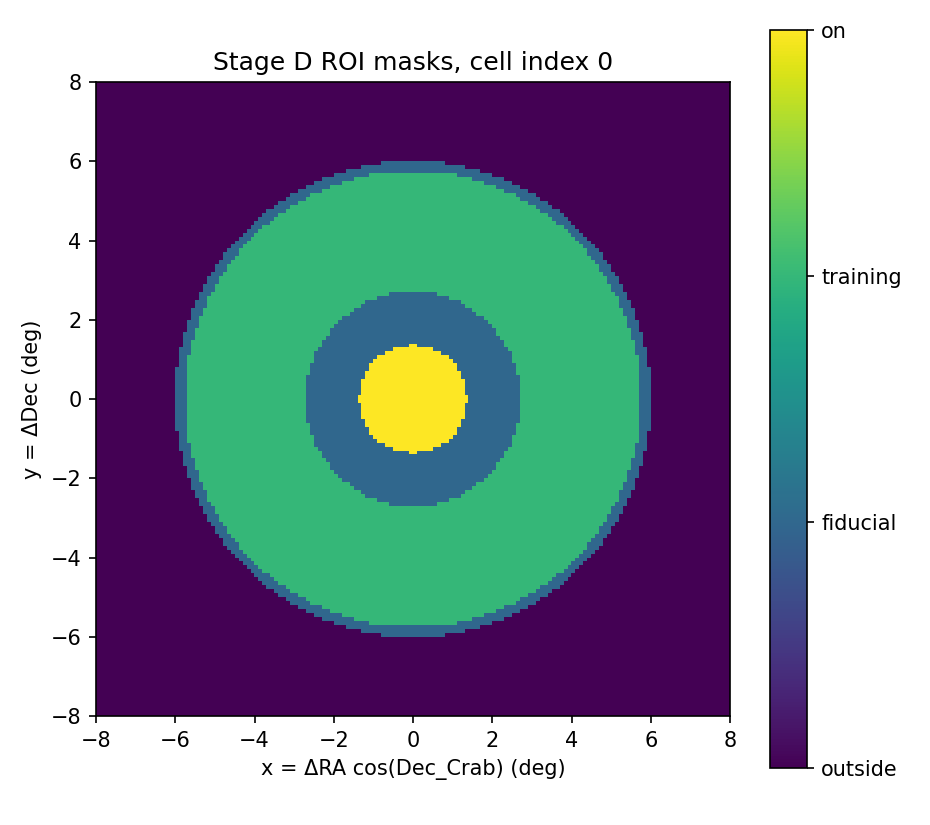
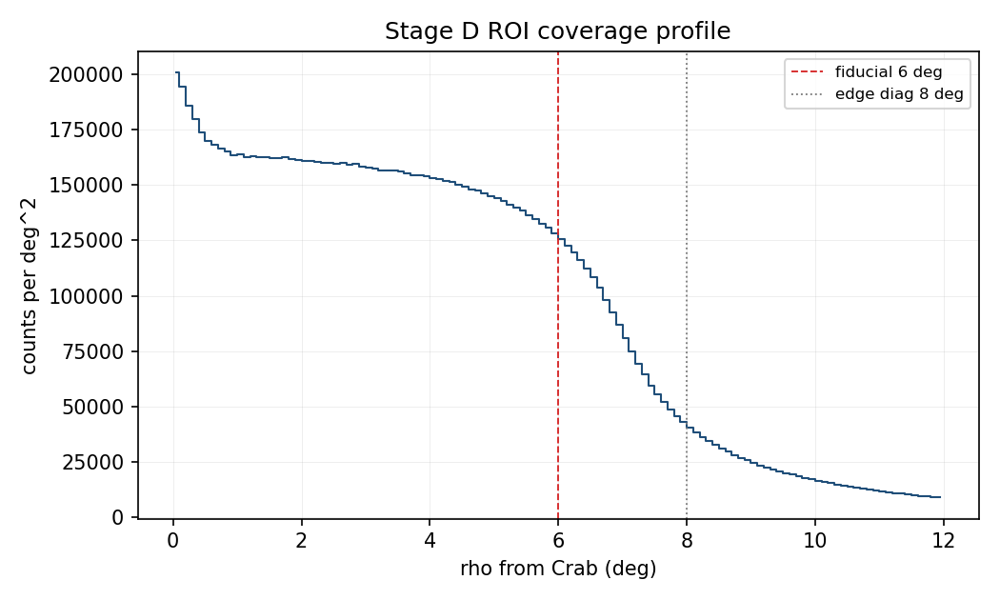
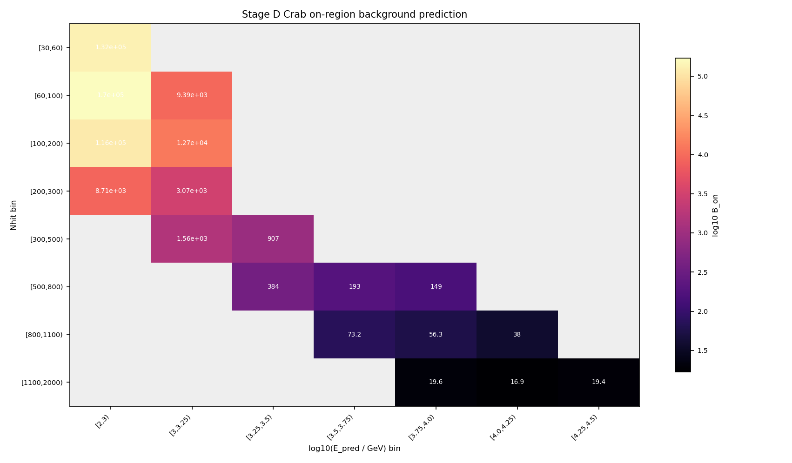

Stage D Background Report
本页记录当前 Stage D 的正式结果：读取 Stage C 清洗后的 18 个 v1 cell 观测事件，在 Crab 周围局部 ROI 内用等赤纬 sideband 估计每个 cell 的 Crab on-region 背景期望 B_on,b。
结论摘要
apply/output/stage_d/current/。
作业 42006 输出 background_mode = crab_roi_local、method = roi_dec_sideband、background_form = direct_expectation。质量状态为 ok，promotable 为 true，Stage E 当前读取的就是这份背景。
为什么需要 Stage D
Stage C 只把观测事件规约为带时间、天球坐标和 cell id 的 parquet 数据集；它不回答 Crab on-region 中有多少背景。Stage E 要计算 excess 和后续 forward-folding 拟合，必须先知道每个 cell 在 Crab 积分孔径内的背景期望。
Stage D 的职责就是建立这个背景模型。当前版本不再使用旧的 full-field HA/Dec direct integration 报告口径，而是在 Stage C 已确认覆盖稳定的 Crab 局部 ROI 中工作：先把事件投到 Crab 切平面坐标，再用同一 Dec strip 的训练像素估计背景密度，最后积分到每个 cell 的 Crab on-region。
Stage D 做了什么
输入和坐标
- Stage C 输入：
/mnt/mydisk/server/projects/energy_reconstruction/apply/output/stage_c/runs/slurm_41959。 - Stage B PSF 输入：
/mnt/mydisk/server/projects/energy_reconstruction/apply/output/stage_b/runs/slurm_41947/psf_v1.npz，读取每个 cell 的r_opt_deg。 - 局部坐标：
x = wrap(ra_mean_deg - 83.63) * cos(22.01 deg)，y = dec_mean_deg - 22.01，rho = sqrt(x^2 + y^2)。 - 计数网格：Crab tangent plane
x/y in [-8, 8] deg，bin width0.1 deg，shape160 x 160。 - 正式 fiducial ROI：
rho < 6 deg；edge diagnostic radius 为8 deg。这个选择来自 Stage C 的 ROI coverage 诊断，Stage C 估计 coverage edge 约为7.15 deg。
source mask 和训练像素
ROI-local 背景只在 Crab 局部切平面内训练。Crab 源区会从训练像素中剔除，避免真实源信号泄漏进背景模型；其他远处强源在这个局部口径中不参与 mask。每个 cell 的 source mask 半径为 max(2 deg, 2 * r_opt_deg)，on-region 半径仍使用 Stage B 的 r_opt_deg。
| mask | RA deg | Dec deg | base radius deg | ROI-local enabled |
|---|---|---|---|---|
| Crab | 83.6300 | 22.0100 | 2.00 | yes |
| Mrk421 | 166.1138 | 38.2088 | 3.00 | no |
| Mrk501 | 253.4676 | 39.7602 | 3.00 | no |
| Geminga | 98.4756 | 17.7703 | 3.00 | no |
| Cygnus_Cocoon | 307.7000 | 41.0000 | 8.00 | no |
这里的训练像素不是传统 off 区计数，也没有定义 alpha。它们只用来给每条 Dec strip 估计背景密度。
背景积分形式
每个 cell 的背景输出为直接期望形式：
B_on,b = sum_y mean(counts in same y strip training pixels) * on_pixels_y
换句话说，先在每个 y/Dec 条带里看训练像素的平均背景密度，再乘以该条带中落入 Crab aperture 的 on pixels 数，最后对所有 y 条带求和。metadata 明确记录 background_form = direct_expectation，并把 alpha_b 和 N_off_b 标为 null；也就是说 Stage D 没有伪造传统 off 区计数。
主要结果
下表给出 18 个 v1 cell 的观测统计、fiducial ROI 事件数、训练 mask 比例、Stage B 积分半径和直接背景期望。低 Nhit 低预测能量 cell 占据绝大部分背景期望；高 Nhit 高预测能量 cell 的 B_on 已降到几十或更低。
| cell | Nhit bin | log10 E_pred bin | selected events | rho<6 events | source masked | r_opt deg | B_on | on pixels | training pixels |
|---|---|---|---|---|---|---|---|---|---|
| 1 | [30,60) | [2,3) | 18,102,668 | 2,709,335 | 22.52% | 1.355 | 132,381 | 576 | 8,056 |
| 2 | [60,100) | [2,3) | 23,097,824 | 4,963,905 | 14.80% | 1.086 | 169,831 | 376 | 8,880 |
| 3 | [60,100) | [3,3.25) | 1,221,585 | 191,685 | 22.30% | 1.325 | 9,388.57 | 548 | 8,176 |
| 4 | [100,200) | [2,3) | 23,642,432 | 6,166,635 | 12.00% | 0.7924 | 116,452 | 208 | 9,100 |
| 5 | [100,200) | [3,3.25) | 2,951,242 | 652,849 | 12.01% | 0.839 | 12,745.1 | 216 | 9,100 |
| 6 | [200,300) | [2,3) | 3,511,356 | 1,008,428 | 11.79% | 0.5577 | 8,710 | 96 | 9,100 |
| 7 | [200,300) | [3,3.25) | 1,555,252 | 395,661 | 11.71% | 0.5469 | 3,068.28 | 88 | 9,100 |
| 8 | [300,500) | [3,3.25) | 1,191,475 | 337,989 | 12.11% | 0.3961 | 1,556.3 | 52 | 9,100 |
| 9 | [300,500) | [3.25,3.5) | 782,322 | 197,494 | 11.64% | 0.4156 | 906.865 | 52 | 9,100 |
| 10 | [500,800) | [3.25,3.5) | 477,133 | 136,988 | 12.15% | 0.3108 | 383.622 | 32 | 9,100 |
| 11 | [500,800) | [3.5,3.75) | 280,350 | 70,750 | 12.02% | 0.3253 | 192.676 | 32 | 9,100 |
| 12 | [500,800) | [3.75,4.0) | 90,323 | 19,228 | 11.62% | 0.5331 | 148.869 | 88 | 9,100 |
| 13 | [800,1100) | [3.5,3.75) | 122,657 | 35,184 | 12.25% | 0.2622 | 73.2162 | 24 | 9,100 |
| 14 | [800,1100) | [3.75,4.0) | 74,431 | 19,557 | 11.70% | 0.2969 | 56.2703 | 32 | 9,100 |
| 15 | [800,1100) | [4.0,4.25) | 23,556 | 5,557 | 12.22% | 0.5141 | 38.0441 | 80 | 9,100 |
| 16 | [1100,2000) | [3.75,4.0) | 51,102 | 14,736 | 12.28% | 0.2172 | 19.5676 | 16 | 9,100 |
| 17 | [1100,2000) | [4.0,4.25) | 46,341 | 12,677 | 12.01% | 0.2324 | 16.8649 | 16 | 9,100 |
| 18 | [1100,2000) | [4.25,4.5) | 25,304 | 6,647 | 10.86% | 0.2924 | 19.4324 | 32 | 9,100 |
诊断图




rho < 6 deg。
B_on 与 N_on 相减。
B_on，也不是 Stage E 正式 excess。输出文件
apply/output/stage_d/current/background_v1.npz：正式数组，包含 ROI counts map、background map、training mask、on pixels 和B_on。apply/output/stage_d/current/background_v1_metadata.json：输入快照、ROI 配置、source mask、直接背景公式和每个 cell 汇总。apply/output/stage_d/current/background_v1_summary.csv：18 个 cell 的表格汇总。apply/output/stage_d/current/background_v1_summary.md：简短 Markdown 摘要。apply/output/stage_d/current/source_masks_v1.csv：本次 source mask 配置。apply/output/stage_d/current/*.png：ROI counts、ROI background、mask summary、coverage profile 和 background prediction 诊断图。
需要澄清和后续风险
alpha/N_off。
Stage E 因此使用 known-background Poisson 诊断，不计算 Li-Ma。若后续要 Li-Ma，需要另行定义兼容的 on/off 统计。
max(2 deg, 2*r_opt)。后续若要发表级结果，应扫描 source-exclusion 半径、fiducial ROI 和 edge margin。
codex_stage_e_contract_full 的 metadata 记录 stage_d_run_id = slurm_42006，总 N_on = 511,044、总 B_on = 455,987。